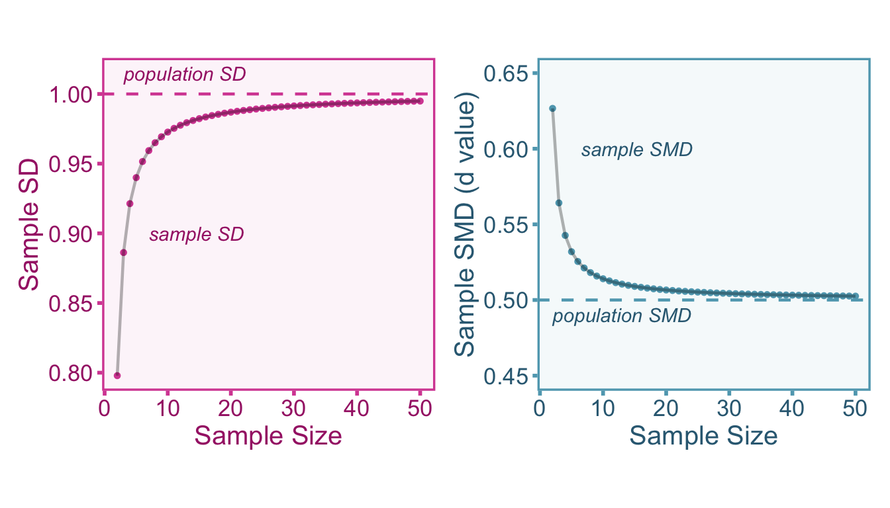

4.1 Introduction
The purpose of sample statistics such as correlations and standardized mean differences is to draw meaningful inferences about the population. However, effect size estimators such as Pearson’s correlation coefficient and standardized mean difference are biased in small sample sizes. This small sample bias will impair our ability to draw accurate inferences about the population.
4.2 When Correcting alongside other Artifacts
The small sample bias should always be corrected for prior to applying any other artifact correction. It is independent of all other artifact corrections and therefore the corrected effect sizes in this section can be treated as the observed effect sizes (and observed sampling variance) in other sections.
4.3 Correcting for Small Sample Bias in Standardized Mean Differences
4.3.1 Defining our Estimand
Our quantity of interest is the population standardized mean difference, \(\delta\), between groups \(A\) and \(B\) on variable, \(y\). We can model the relationship between the population standardized mean difference and our observed standardized mean difference (\(d_o\)) with,
\[ d_o = a\delta+\varepsilon. \]
Where \(a\) is our small sample biasing factor and \(\varepsilon\) is our sampling error term. Ultimately, we can obtain an unbiased estimate of the population standardized mean difference by correcting the observed standardized mean difference as follows,
\[ d_c = \frac{d_o}{a}. \]
4.3.2 Artifact Correction for Small Sample Bias
As the sample size approaches infinity, Cohen’s standardized mean difference estimator is an unbiased estimator of the population standardized mean difference (Hedges 1981; Cohen 2013). However, in small sample sizes Cohen’s estimator is biased upward, that is, on average, it overestimates the population standardized mean difference. To see why this is the case, we can first define the standardized mean difference between group \(A\) and group \(B\) such that,
\[ d = \frac{\bar{y_A}-\bar{y}_B}{\sigma_p}. \]
Where \(\bar{y}_A\) and \(\bar{y}_B\) are the observed arithmetic means of group \(A\) and group \(B\), respectively. The raw difference between these two means will be unbiased, since the arithmetic means themselves are unbiased estimators at all sample sizes. However, the pooled standard deviation, \(\sigma_p\), is biased when sample sizes are small. Statisticians ultimately had to choose whether the estimator of the standard deviation or the variance (the square of the standard deviation) would be unbiased. Since the variance has more utility in much of statistics, it was more important for the estimator of variance to be unbiased. Therefore the resulting bias in the standard deviation will bleed over into the equation for standardized mean differences. This bias can be visualized in the figure below. Notice that the sample standard deviation is under-estimated in small sample sizes (left plot), and the standardized mean difference is over-estimated in small sample sizes (right plot).
To obtain an unbiased estimate of the population standardized mean difference, we need to estimate a correction factor that can account for this bias. The small sample correction factor has been derived previously by Hedges (1989). When applied to a \(d\) value, it is common convention to refer to resulting corrected value as “Hedges’ \(g\)”, giving credit to the originator and to keep it similar in style to the conventionally termed “Cohen’s \(d\)”. However this convention will not be used here, instead we will denote it in this section as the small sample corrected \(d\) value (\(d_c\)). We can compute the artifact biasing factor, \(a\), with the total sample size (\(n=n_A+n_B\)) and Gamma functions (\(\Gamma(\cdot)\)),
\[ a = \frac{\Gamma\left(\frac{n-3}{2}\right)\sqrt{\frac{n-2}{2}}}{\Gamma\left(\frac{n-2}{2}\right)}. \]
Then to correct the observed standardized mean difference for small sample bias we can divide by \(a\),
\[ d_c = \frac{d_o}{a} = \frac{d_o}{ \left[\frac{\Gamma\left(\frac{n-3}{2}\right)\sqrt{\frac{n-2}{2}}}{\Gamma\left(\frac{n-2}{2}\right)}\right]}. \]
It is important to point out that there is not a sample size threshold in which this correction does not apply, therefore common suggestions such as “small sample correction should be applied when n<30” is misguided since this correction can (and should) be applied at any sample size. Since the formula is quite complicated, there is also a simpler approximation of the this formula also given by Hedges (1989), \(a\approx 1/\left(1-\frac{3}{4n-3}\right)\). When this correction is made, we must also adjust the sampling variance (\(\sigma_{\varepsilon_o}\)),
\[ \sigma^2_{\varepsilon_c} = \frac{\sigma^2_{\varepsilon_o}}{a^2} =\frac{\sigma^2_{\varepsilon_o}}{\left[\frac{\Gamma\left(\frac{n-3}{2}\right)\sqrt{\frac{n-2}{2}}}{\Gamma\left(\frac{n-2}{2}\right)}\right]^2}. \]
4.3.3 Correcting Standardized Mean Differences in R
To compute the correction in R, we can first simulate 20 data points, 10 in group \(A\) and 10 in group \(B\). Then we can calculate the observed \(d\) value.
# set seed
set.seed(120)
# define parameters
nA <- 10
nB <- 10
n <- nA + nB
delta <- .5
# simulate data
yA <- rnorm(nA,delta,1)
yB <- rnorm(nB,0,1)
# calculate observed d value
SD_pooled = ((nA-1)*var(yA) + (nB-1)*var(yB)) / (nA+nB-2)
do = (mean(yA) - mean(yB)) / SD_pooledOnce we have obtained \(d_o\), we can then correct it with the equations in the previous section.
# calculate bias factor
a <- (gamma((n-3)/2)*sqrt((n-2)/2)) / gamma((n-2)/2)
# correct d value
dc = do / a
# print results
rbind(paste0('Observed: do = ',round(do,3)),
paste0('Corrected: dc = ',round(dc,3))) [,1]
[1,] "Observed: do = 0.889"
[2,] "Corrected: dc = 0.851"You will notice that the small sample correction reduced the observed \(d\) value however it is still far away from the true value. This is simply due to the fact that there is a large amount of sampling error on top of the bias.
4.4 Correcting for Small Sample Bias in Correlations
4.4.1 Defining our Estimand
Our quantity of interest is the population correlation, \(\rho\), between independent variable, \(x\) and dependent variable, \(y\). We can model the relationship between the population correlation and our observed correlation (\(r_o\)) with,
\[ r_o = a\rho+\varepsilon \]
Where \(a\) is our small sample biasing factor and \(\varepsilon\) is our sampling error term. Ultimately, we can obtain an unbiased estimate of the population correlation by correcting the observed correlation as follows,
\[ r_c = \frac{r_o}{a} \]
4.4.2 Artifact Corrections
Correlation coefficients also are biased in small sample sizes (Olkin and Pratt 1958). As opposed to standardized mean differences, correlations are under-estimated, rather than over-estimated, in small samples. The bias is quite small, however we can apply a correction factor to obtain unbiased estimates of the population correlation. Because the bias is so small and the exact formula is a hypergometric function using infinite power series, we will instead focus on the extremely close approximation provided in Olkin and Pratt (1958). Therefore, the biasing factor can be calculated such that,
\[ a \approx \frac{1}{1+\frac{1-r_o^2}{2(n-3)}}. \]
Then we can correct the point-estimate the sampling variance for small sample bias
\[ r_c = r_o \times\left[1+\frac{1-r_o^2}{2(n-3)}\right] \]
\[ \sigma^2_{\varepsilon_c} = \sigma^2_{\varepsilon_o} \times \left[1+\frac{1-r_o^2}{2(n-3)}\right]^2. \]
4.4.3 Correcting Correlations in R
To compute the correction in R, we can first simulate 10 correlated data points. Then we can calculate the observed correlation.
# load packages
# install.packages('MASS')
library(MASS)
# set seed
set.seed(1)
# define parameters
n <- 10
rho <- .5
# simulate data
data = mvrnorm(n = 10,
mu=c(0,0),
Sigma = data.frame(x=c(1,rho),x=c(rho,1)))
# calculate observed d value
ro = cor(data[,1],data[,2])Once we have obtained \(r_o\), we can then correct it with the equations in the previous section.
# calculate bias factor
a <- 1/(1 + (1-ro^2)/(2*(n-3)))
# correct d value
rc = ro / a
# print results
rbind(paste0('Observed: ro = ',round(ro,3)),
paste0('Corrected: rc = ',round(rc,3))) [,1]
[1,] "Observed: ro = 0.247"
[2,] "Corrected: rc = 0.264"You will notice that the small sample correction increases the observed correlation however it is still far away from the true value. This is simply due to the fact that there is a large amount of sampling error on top of the bias.